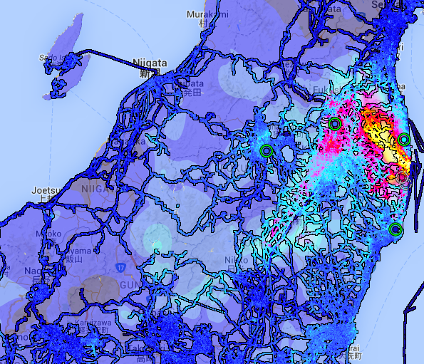

Lessons for open data from the Fukishima nuclear disaster

IAEA fact-finding team leader visit the Fukushima Daiichi Nuclear Power Plant. Photo by Greg Webb / IAEA CC by 2.0
In the aftermath of the 2011 Fukushima earthquake and Level 7 nuclear disaster there was almost no publicly available information about radiation levels, and what there was was spotty and unreliable. For citizens there was no way to know the extent of radiation contamination and there seemed no obvious attempt to find out. The only previous Level 7 nuclear disaster to date was Chernobyl in 1986, so there was also little historic precedent for how information should be shared.
At Global DIRT (Disaster Immediate Response Team) we had what we thought was a simple idea. We would fly to Japan with a donated radioactive isotope identification instrument - a Sam 940 RIIS, take measurements of contamination levels in Fukushima and publish them. We thought the operation would be a relatively short-lived, expecting that a Japanese government agency would soon start gathering and publishing data itself on a much larger scale than was possible for a small group of volunteers.
We landed in Tokyo in mid-March 2011 just a few days after the earthquake and began taking measurements. It caused more than a few suspicious glances.
We decided first to focus on school zones. Schools are particularly high-risk areas for radiation contamination and, perhaps naively, we thought that an emphasis on protecting children might minimise any ruffled political feathers. But, interestingly, it wasn’t a government authority who first began to ask questions, but officials in the schools themselves. As one school official asked us, “what happens if you find something? [...] Then it will be chaos and we will have to do something!”
The response is telling. It highlights different cultural attitudes towards transparency and openness. For this school official, in order to maintain the status quo, it was simply better not to know - a perspective which in this current age of information over-saturation might be worth meditating upon.
Everywhere in Japan we were surprised by the calm and order with which the spectre of radiation contamination was handled. In the face of a natural disaster the focus was on the maintenance of order, perhaps for good reason.
Indeed, this was the focus of the state as well. One policeman stopped us at a roadblock just outside the 3 km evacuation radius wearing only his uniform, gloves and mask. He told us very seriously that the area was safe from radiation because his bosses said it was and he needed to believe them.
The Japanese government, like any government, was concerned to maintain public order, especially given the threat of disorder that any natural disaster generates. These two attitudes - the cultural emphasis on order and intrinsic interest of the state in maintaining control - manifests itself here in a lack of transparency and accountability; the government was not willing to publish data and citizens were not holding them accountable.
After the roadblocks at the school and with government officials, we realised our operation of a few volunteers and a geiger counter was too small to make any sizeable impact in bringing radiation data to the public.
Enter open data.
After the Fukushima disaster, it was nearly impossible to buy radiation monitoring equipment as units had been sold-out all over the world. In Tokyo we began working with a then fledgeling organisation called Safecast. Safecast were assembling at the Tokyo Hackerpsace to build their own geiger counters.
This group of software developers, hackers, artists, and engineers began to capture data points across Japan in the style of Google Streetview. They attached the geiger counters to an iPhone programmed to take a picture every five minutes, strapped that to a car, drove around, and then mapped the data based on the geo-tagged photos from the iPhone. A few data points were then checked against our professional radiation monitor and published as open data, and anyone who purchased the geiger counter from the Safecast website could contribute to the map. Geiger counters were strapped to cars, delivery buses, bikes.
Safecast MiniDoc | by Adrian Storey
Eventually maps began to look like this:

Safecast has now mapped radiation levels across Japan and has extended this effort to the rest of the world. By mobilising open source and open data technology, radiation data was made available to the Japanese public. And by fashioning their own geiger counters, Safecast democratised the means by which radiation can be monitored.
While this case is an example of the solutions that open data can provide, it also raises broader questions for any acolyte of open data to consider.
Firstly, how does the cultivation of a transparent open data approach translate across cultures? To put it another way, how can an ethic of transparency be cultivated in settings where other norms (such as order) might be emphasized over openness?
Secondly, what is the nature of transparency and open data’s relationship to governance? This is particularly relevant when considering potential harms to public good such as radiation. Is there a kernel of truth in the sentiment of the school official? If knowing the extent of radiation ran the risk of undermining social order, would you want everyone to know?
These are big questions; and as the open data movement develops, our answers will help us to understand how open data can best promote knowledge sharing and an empowered citizenry.